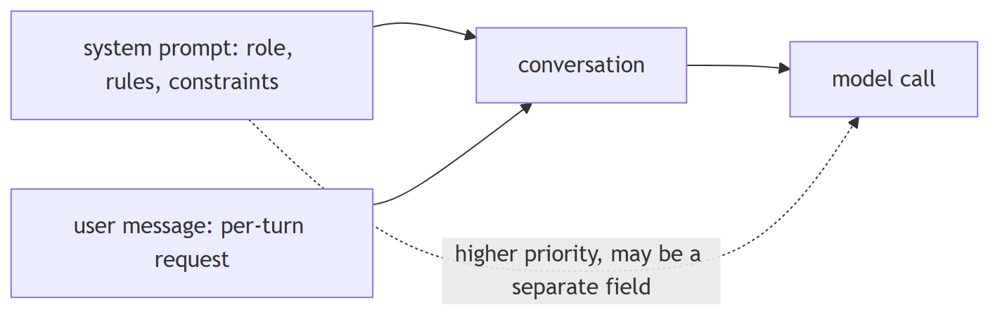
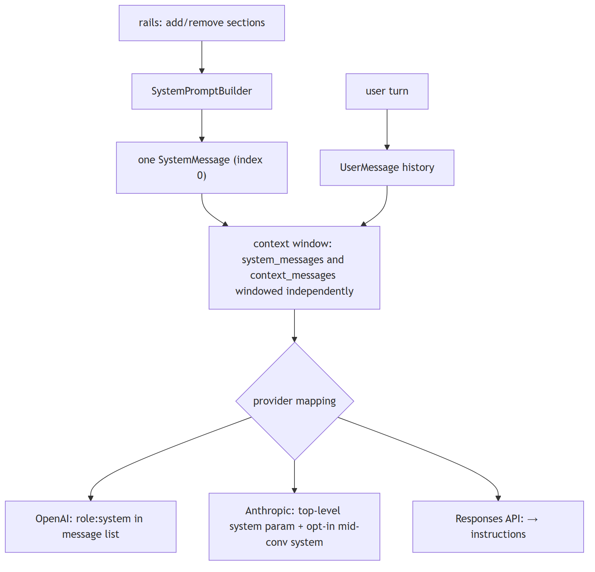
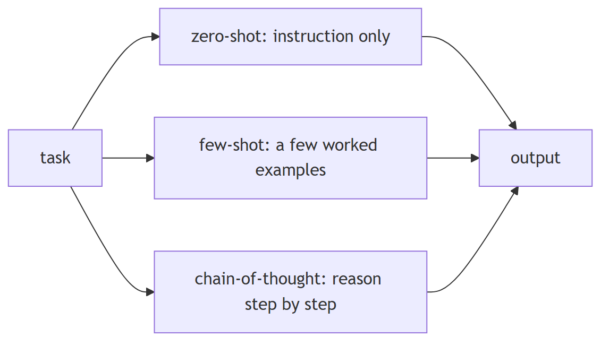
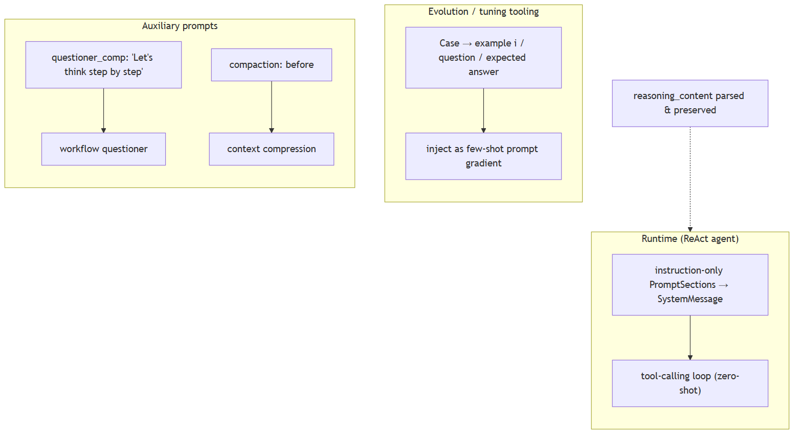
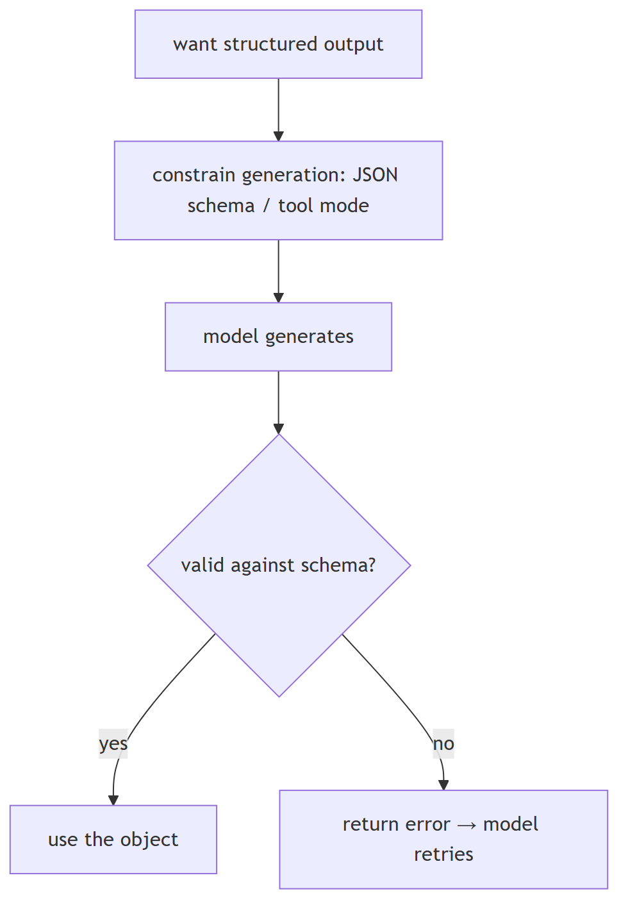
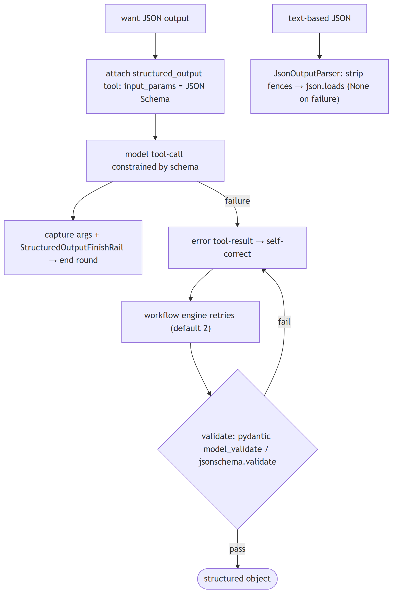
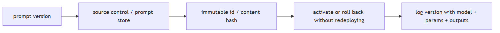
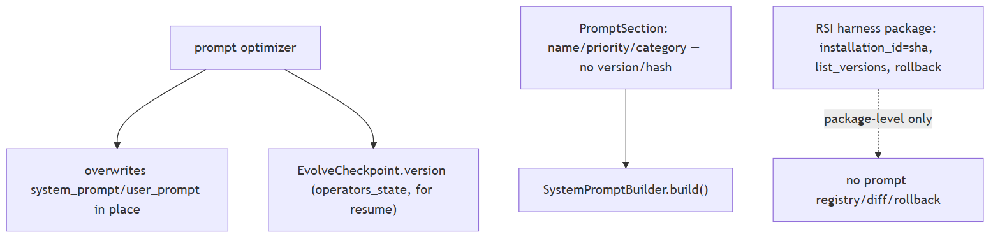
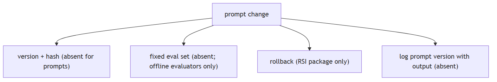

Prompting and output control
1. What's the difference between a system prompt and a user prompt
Compare basic
TL;DR. The system prompt sets persistent role and rules; the user prompt is the per-turn request. Providers give system content higher priority and may pass it as a separate field.
Key points.
- System: identity, rules, constraints — consistent across turns.
- User: the changing per-turn input.
- Anthropic lifts system to a top-level field; the Responses API folds it into instructions.
Concept. The system prompt sets persistent role, rules, persona, and constraints for the whole conversation; the user prompt is the per-turn request. Providers give the system message higher priority and apply it consistently, while user turns are the changing input. Some APIs (Anthropic) pass system content as a separate top-level field rather than a role in the message list.

In Jiuwen. Jiuwen assembles the system prompt as one string from priority-ordered, host-injectable sections; rails can add or remove sections before the model call, and the ReAct agent renders it once as a system message passed separately. User turns are admitted as separate user-message history, and the context engine windows system and context messages independently. Provider mapping differs: OpenAI keeps the system role in the message list, Anthropic lifts system to a top-level field, and the Responses API folds it into instructions.
Under the hood
Implementation
The system prompt is a single assembled string from priority-ordered, host-injectable sections; rails mutate the SystemPromptBuilder (add/remove sections) before the model call, and ReActAgent renders it once as a SystemMessage passed as system_messages. User turns are admitted separately as UserMessage history; the context engine windows system_messages and context_messages independently. Provider mapping differs: OpenAI chat keeps role:"system" in the list, Anthropic lifts system content to the top-level system parameter (with an opt-in mid-conversation system path), and the Responses API folds system/developer into instructions.
Implementation diagram

Code anchors
| Code anchor | What it points to |
|---|---|
agent-core/openjiuwen/core/single_agent/agents/react_agent.py:1504 |
builds one SystemMessage; :883 _admit_user_message() writes a UserMessage |
agent-core/openjiuwen/core/context_engine/context/context.py:574 |
get_context_window(system_messages, ...); :718 _get_window_messages() windows independently |
agent-core/openjiuwen/harness/rails/task_planning_rail.py:163 |
rail adds/removes a system-prompt section |
agent-core/openjiuwen/harness/rails/security/prompt_security_rail.py:16 |
security section injection |
agent-core/openjiuwen/harness/prompts/prompt_attachment_manager.py:592 |
user→system re-role per provider |
agent-core/openjiuwen/core/foundation/llm/model_clients/anthropic_model_client.py:379 |
lifts system into top-level blocks; :858 params["system"] |
agent-core/openjiuwen/core/foundation/llm/utils/responses_utils.py:142 |
system/developer → instructions |
2. Zero-shot vs. few-shot vs. chain-of-thought, when does each actually improve output
Mechanism intermediate
TL;DR. Zero-shot for tasks the model knows; few-shot pins down format or edge cases; chain-of-thought helps multi-step reasoning (more as scale grows) and is largely subsumed by reasoning models.
Key points.
- Few-shot: worked examples fix format, labels, and conventions.
- CoT: intermediate reasoning; benefit grows with model scale.
- All add tokens; not free wins on simple tasks.
Concept. Zero-shot (instruction only) works for tasks the model saw in instruction tuning. Few-shot (worked examples) helps when the task has a specific format, label set, or edge-case convention the instruction can't fully specify. Chain-of-thought (ask for intermediate reasoning) helps multi-step reasoning/arithmetic, and its benefit generally grows with model scale (on small models it is unreliable and can even hurt); it is largely subsumed by native reasoning models. All three cost prompt tokens; examples and CoT are not free wins on simple tasks.

In Jiuwen. The runtime agent is fundamentally zero-shot: the system prompt is built from instruction-only sections and the model is steered by the ReAct tool loop, not worked examples. Few-shot machinery exists only in the tuning/evolution tooling, which formats cases into example blocks. Chain-of-thought appears in auxiliary prompts (a workflow questioner and the compaction prompt's analysis-then-summary), and reasoning-model output is preserved by parsing the reasoning content.
Under the hood
Implementation
The runtime agent is fundamentally zero-shot: the system prompt is assembled from instruction-only PromptSections (identity, safety, skills, tools, task guidance) and the model is steered through the ReAct tool-calling loop, not worked examples. Few-shot machinery exists only in the evolution/tuning tooling (agent_evolving, dev_tools/tune), which formats cases into example blocks and injects them as prompt gradients. Chain-of-thought appears in auxiliary prompts (workflow questioner_comp has an explicit "Let's think step by step") and implicitly in the compaction prompt's <analysis>-then-<summary> structure. Reasoning-model output is preserved: clients parse reasoning_content, and DeepSeek profiles inject an empty reasoning_content into assistant history.
Implementation diagram

Code anchors
| Code anchor | What it points to |
|---|---|
agent-core/openjiuwen/core/single_agent/agents/react_agent.py:842 |
renders role=="system" template messages; :1504 SystemMessage(content=prompt_builder.build()) |
agent-core/openjiuwen/core/single_agent/prompts/builder.py:219 |
build() joins priority-ordered sections |
agent-core/openjiuwen/harness/prompts/sections/identity.py:11 |
default identity prompt (zero-shot) |
agent-core/openjiuwen/agent_evolving/utils.py:238 |
convert_cases_to_examples() |
agent-core/openjiuwen/dev_tools/tune/optimizer/example_optimizer.py:109 |
init_examples() few-shot injection |
agent-core/openjiuwen/core/foundation/llm/model_clients/openai_model_client.py:347 |
parses reasoning_content; agent-core/openjiuwen/core/foundation/llm/utils/endpoint_profiles.py:37 — DeepSeek empty reasoning_content |
agent-core/openjiuwen/core/workflow/components/llm/questioner_comp.py:68 |
explicit CoT instruction |
3. How do you get consistent, parseable output like JSON from an LLM
Mechanism intermediate
TL;DR. Constrain generation (schema/tool mode), validate, and retry on failure; treat free-text JSON as a last resort.
Key points.
- Prefer provider JSON/schema mode or tool calling with a JSON Schema.
- Validate against the schema and feed errors back for a retry.
- Free-text/fenced JSON needs tolerant extraction and repair.
- Never act on unvalidated structured output.
Concept. Layer the guarantees: prefer a provider JSON/schema mode or tool/function calling with a JSON Schema so the model is constrained at generation time; validate against the schema; on failure, return the validation error to the model for a retry; only then parse. Fenced or free-text JSON should be a last resort with tolerant extraction and repair.

In Jiuwen. The core harness has no native JSON or response-format mode; structured output is enforced by giving the model a single-use structured-output tool whose input schema is the caller's JSON Schema, so the provider's tool layer constrains the arguments. On success the arguments are captured and a finish rail ends the round; on failure the error is returned for self-correction, and the workflow engine validates the captured object. For text JSON, a JSON output parser strips a json code fence and loads the payload, returning nothing on decode failure.
Under the hood
Implementation
Provider-level constrained decoding (response_format/json_schema) is not used; structured output is enforced by giving the model a single-use structured_output tool whose ToolCard.input_params is the caller's JSON Schema, so the provider's tool-use layer constrains arguments. On success the arguments are captured on the tool instance and a finish rail ends the round; on failure the error tool-result is returned for self-correction, and the workflow engine retries then validates the captured object with pydantic model_validate or jsonschema.validate. For text-based JSON (compression summaries), JsonOutputParser strips a ```json fence when present and json.loads the payload, returning None on decode failure rather than raising.
Implementation diagram

Code anchors
| Code anchor | What it points to |
|---|---|
agent-core/openjiuwen/agent_teams/tools/structured_output_tool.py:46 |
StructuredOutputTool; :82 input_params = schema_json; :117 StructuredOutputFinishRail.after_tool_call |
agent-core/openjiuwen/agent_teams/workflow/backends/team_worker_backend.py:230 |
attaches one StructuredOutputTool per schema; :484 finish rail; :498 reminder |
agent-core/openjiuwen/agent_teams/workflow/engine/schema.py:55 |
resolve_schema(); :74 coerce() (pydantic/jsonschema) |
agent-core/openjiuwen/agent_teams/workflow/engine/primitives.py:693 |
retries; :763 coerce(res.structured, ...); agent-core/openjiuwen/agent_teams/workflow/engine/runtime.py:62 retries: int = 2 |
agent-core/openjiuwen/core/foundation/llm/output_parsers/json_output_parser.py:15 |
fence/bare extraction + json.loads; :92 stream_parse() |
agent-core/openjiuwen/core/context_engine/processor/compressor/round_level_compressor.py:713 |
JsonOutputParser(); :1266 validates |
4. How do you version prompts the same way you'd version code
Mechanism intermediate
TL;DR. Treat prompts like code: immutable IDs/hashes, diffs, activate/rollback without redeploying, and tie each version to the model and parameters it was tested with.
Key points.
- Store in source control or a prompt store with content hashes.
- Build prompts from composable, individually versioned sections.
- Support activate/rollback and A/B without redeploying.
- Log the prompt version alongside outputs.
Concept. Treat prompts as versioned artifacts: store them in source control (or a prompt store), give each version an immutable ID/content hash, track diffs and metadata, allow activate/rollback without redeploying, and tie a version to the model/parameters it was tested with. Ideally prompts are assembled from composable, individually versioned pieces.

In Jiuwen. Prompts are assembled from named sections ordered by priority and extended with a mode filter; sections carry only name, priority, and category — no version or hash. Diagnostics exist but are not versioning. Prompt optimization overwrites the operator's prompts in place, and the only persistence is a checkpoint version storing operator state for resume. Real versioning and rollback exist only at the product's RSI harness-package level and in config migration.
Under the hood
Implementation
Prompts are assembled from named PromptSections ordered by priority (SystemPromptBuilder.add_section/build), extended by harness.prompts.builder with a PromptMode filter, and JiuwenSwarm supplies a static priority registry. Sections carry name/priority/category/carrier/content — no version, hash, or ID. Diagnostics exist (PromptReport) but are not versioning. Prompt optimization overwrites the operator's system_prompt/user_prompt in place; the only persistence is EvolveCheckpoint.version storing operators_state for resume. Real versioning/rollback exists only at the RSI harness-package level (content-addressed installation_id, list_versions, rollback with hash re-validation) and config migration.
Implementation diagram

Code anchors
| Code anchor | What it points to |
|---|---|
agent-core/openjiuwen/core/single_agent/prompts/builder.py:24 |
PromptSection (no version); :97 add_section; :219 build |
agent-core/openjiuwen/harness/prompts/builder.py:21 |
PromptMode filtering; agent-core/openjiuwen/harness/prompts/sections/init.py:6 — SectionName constants |
agent-core/openjiuwen/harness/prompts/report.py:58 |
PromptReport diagnostics (no hash/version) |
agent-core/openjiuwen/harness/manifest/models.py:43 |
HarnessElementDescriptor (no version field) |
jiuwenswarm/jiuwenswarm/agents/harness/common/prompt/priority_registry.py:19 |
static priority registry |
agent-core/openjiuwen/core/operator/llm_call/base.py:107 |
get_state/load_state snapshot prompt content |
agent-core/openjiuwen/agent_evolving/checkpointing/state.py:15 |
EvolveCheckpoint.version for resume |
jiuwenswarm/jiuwenswarm/agents/harness/common/rsi/harness_activation.py:617 |
rollback; :587 list_versions; jiuwenswarm/jiuwenswarm/server/rsi/rsi_handlers.py:218 — RPC list/rollback |
jiuwenswarm/jiuwenswarm/common/utils.py:882 |
config_version migration |
5. Any prompt behavior question is secretly a versioning and testing question
Claim intermediate
Claim, not a question. The heading is an assertion about what these questions probe; the notes below assess whether it holds.
TL;DR. Any prompt behavior question is secretly a versioning and testing question.
Key points.
- Sections carry name/priority/category, no version.
- Optimization overwrites in place.
- Diagnostics ≠ versioning.
- Rollback only at harness-package level.
Concept. This claim holds in practice: prompt behaviour changes should be versioned and regression-tested, so "what prompt should I use" resolves into "how do I version and test prompts". Treat prompts like code, not one-off strings. Version prompts in source control or a prompt store with an immutable ID/hash, run a fixed eval on every change, gate the deploy, log the prompt version with the output, and keep a one-step rollback for changes that degrade output.

In Jiuwen. Prompts are assembled from named sections that carry only name, priority, category, and carrier — no version or hash; optimization overwrites them in place; and the prompt report is diagnostics, not versioning. Rollback exists only at the RSI harness-package level.
Under the hood
Implementation
Prompts are assembled from named PromptSections that carry only name/priority/category/carrier (no version/hash); optimization overwrites them in place; PromptReport is diagnostics, not versioning. Rollback exists only at the RSI harness-package level, and the CI gate has no eval threshold. Logs carry spans but not a prompt-version identifier.
Code anchors
| Code anchor | What it points to |
|---|---|
agent-core/openjiuwen/core/single_agent/prompts/builder.py:24 |
PromptSection (no version); :219 build |
agent-core/openjiuwen/harness/prompts/report.py:58 |
PromptReport diagnostics |
agent-core/openjiuwen/agent_evolving/checkpointing/manager.py:43 |
checkpoint version (operator state) |
jiuwenswarm/jiuwenswarm/agents/harness/common/rsi/harness_activation.py:617 |
package-level rollback |
agent-core/openjiuwen/auto_harness/resources/ci_gate.yaml:21 |
no eval gate |